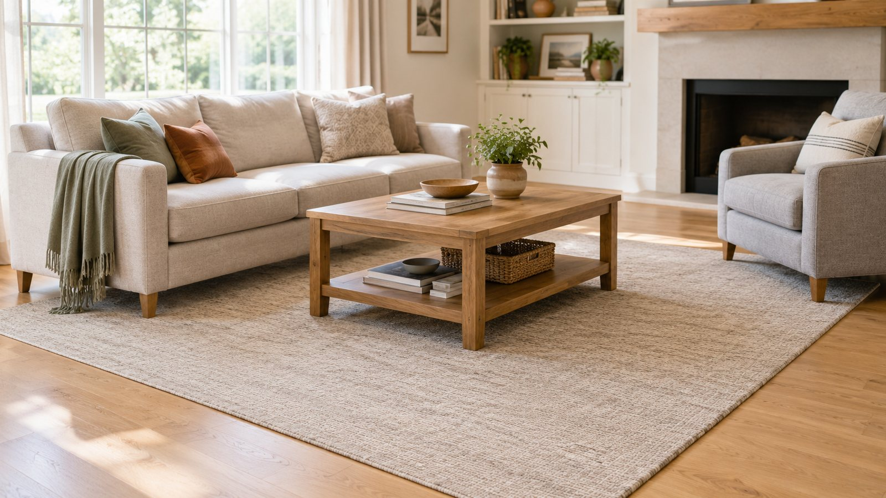
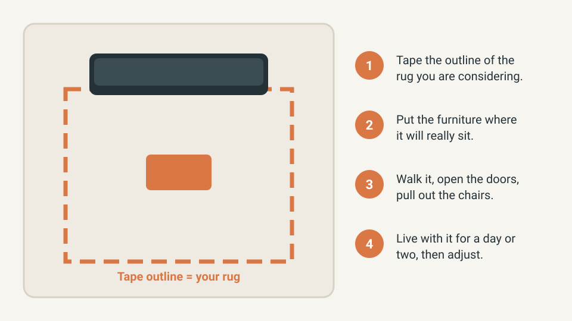
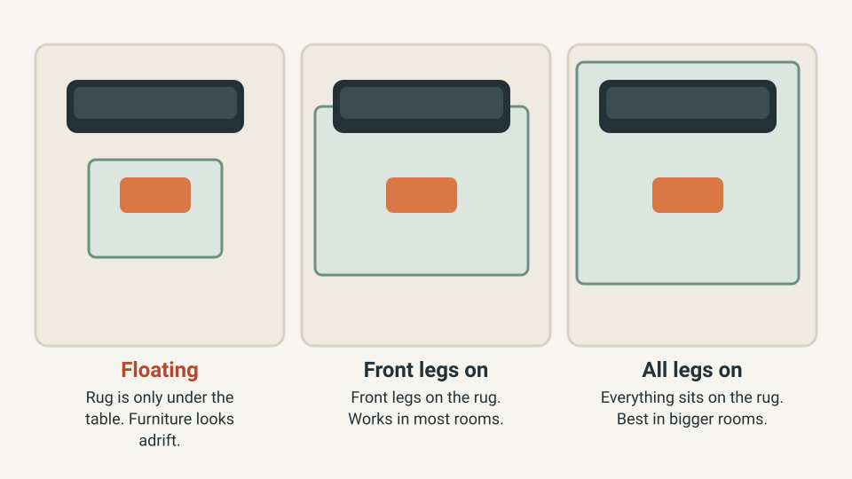
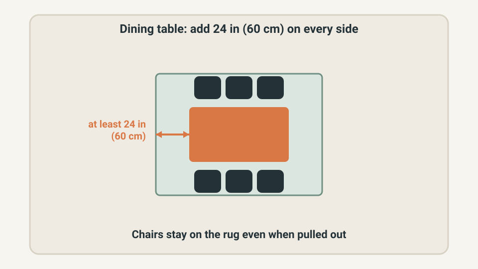
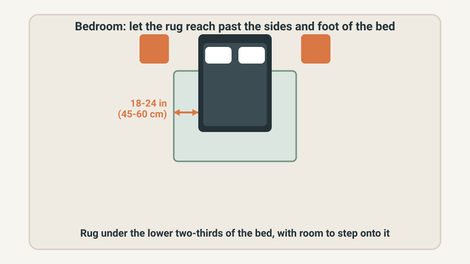

HOME DESIGN · RUGS & LAYOUT
How to Choose the Right Rug Size: The Painter's-Tape Test

The most common rug mistake is not the colour or the pattern. It is the size. A rug that is too small leaves the sofa and chairs adrift on bare floor, and the room feels less finished than it should.
The fix costs almost nothing: mark the rug on the floor with painter's tape, then check the furniture legs, walkways and doors. Below are the method and the measurements for a living room, dining table and bed.
The quick answer
- Living room: put at least the front legs of the sofa and chairs on the rug, or all legs in a bigger room.
- Dining table: add at least 24 in (60 cm) on every side so the chairs stay on the rug when pulled out.
- Bed: let the rug reach about 18 to 24 in (45 to 60 cm) past the sides and foot of the bed.
- Keep a margin of bare floor around the rug, commonly about 12 to 18 in (30 to 45 cm) in a living room.
- Tape it out first. If the taped rectangle feels right after a day or two, buy that size.
These figures are widely used design rules of thumb, not strict laws. Sources differ by a few inches, which is exactly why the tape test is worth doing.
Quick plan
| Item | Detail |
|---|---|
| Time | About 20 minutes, plus a day or two of living with it |
| Cost | A roll of painter's tape, or free if you use newspaper |
| Best for | Beginners, renters and anyone about to order a rug online |
| Goal | Buy the right size once, instead of returning a rug that looks too small |
Step 1: Mark the rug with painter's tape
Choose the size you are considering, for example 5 x 8 ft (about 152 x 244 cm), and tape a rectangle of exactly that size on the floor where the rug would go. Put the furniture where it will really sit, then look at the room from the doorway and from the sofa.

- Measure the rug size you are considering and tape a rectangle of that size.
- Place the sofa, chairs and tables where they will actually stand.
- Walk through the room, open the doors and pull out the chairs.
- Leave the tape for a day or two, then adjust the rectangle and repeat.
Low-tack painter's tape is designed to come off cleanly, but test a hidden spot first, especially on unsealed wood, and do not leave it down for weeks. No tape? Lay out flattened cardboard boxes or sheets of newspaper to the same size.
Step 2: Choose your living room layout: front legs on or all legs on
Pick one of three layouts and commit to it. Mixed placements, where one chair is half on and half off, look accidental.

| Layout | What it looks like | Best for |
|---|---|---|
| All legs on | Sofa, chairs and table all sit on the rug | Larger rooms and big sectionals (often 9 x 12 ft) |
| Front legs on | Front legs rest on the rug, back legs on the floor | Most living rooms (often 8 x 10 ft) |
| Table only | Only the coffee table sits on a small rug | Very small rooms; the furniture can look adrift |
If the taped rectangle leaves the sofa fully on bare floor, the rug is probably too small. If it forces you to move the sofa to make it fit, that is not a reason to buy a smaller rug: it is a sign the furniture and the rug are fighting for the same space.
Step 3: Check the gaps and the walkways
Stand in the doorway with the tape in view and check three things:
- Margin: about 12 to 18 in (30 to 45 cm) of bare floor to the walls is a common target, although sources range from 8 to 24 in. In a narrow room, accept less rather than shrinking the rug until it floats.
- Doors: open every door and drawer that swings over the rug. Thick pile can catch the door. A low-pile rug, or a smaller one, solves it.
- Walkways: the path from the door to the sofa should be clear of tape corners and edges that someone could trip on.
Safety matters here too. Use a rug pad or non-slip underlay so the rug does not slide, check that the pad is labelled safe for your floor type, and replace any rug whose corners will not lie flat.
Dining table rugs: keep the chairs on the rug
The dining room has one rule that matters more than any other: the chairs must stay on the rug when someone pulls them back to sit down. Otherwise the chair legs catch on the edge every day.

The sum is simple: add at least 48 in to the length and the width of the table (24 in per side). A 72 x 36 in table needs a rug of at least 120 x 84 in, so in practice an 8 x 10 ft rug (96 x 120 in) is the size to look for. In metric, add about 120 cm to each dimension. Some guides recommend up to 30 in (75 cm) per side if the room allows.
Bedroom rugs: let the bed sit on part of the rug
A bedroom rug should give you something soft to step onto, and look proportionate to the bed. Many designers place the rug under the lower two-thirds of the bed, with 18 to 24 in (45 to 60 cm) showing at the sides and foot.

A US queen bed is about 60 x 80 in (152 x 203 cm). Adding 18 in per side gives a rug at least 96 in wide, so an 8 x 10 ft rug just fits. For 24 in per side you need 108 in, so look at 9 x 12 ft. A 5 x 8 ft rug placed across the foot of the bed is a fallback in a small room, but it is a compromise rather than a rule.
Standard rug sizes in feet and centimetres
Rugs are usually sold in standard sizes, so it helps to know what is available before you tape.
| Size | About (cm) | Typical use |
|---|---|---|
| 5 x 8 ft | 152 x 244 | Small living room, bedside, dining nook |
| 8 x 10 ft | 244 x 305 | Most living rooms and dining tables |
| 9 x 12 ft | 274 x 366 | Large living rooms, big sectionals, king beds |
UK and European sellers often list metric sizes such as 160 x 230 cm or 200 x 290 cm, so tape the exact dimensions listed on the product page rather than the nearest feet and inches.
What not to buy yet
- A rug before you have taped it. Sizes on screen look bigger than they are.
- A rug pad before you know the rug size. Pads are cut to fit, so buy them together.
- A second small rug to fix a rug that is too small. Replacing it is usually cheaper than layering.
Quick win (10 minutes)
- Pick the furniture arrangement you will keep.
- Tape an 8 x 10 ft rectangle (96 x 120 in) in front of the sofa, centred on the seating area.
- Check that the front legs of the sofa and chairs sit inside the tape.
- If a door hits the tape, mark the door swing and consider a lower-pile rug.
Common mistakes
- Buying the size that feels "safe" and ending up with a rug that floats.
- Ignoring chair movement under a dining table.
- Placing a rug in a doorway without checking the door swing.
- Skipping the rug pad, then dealing with slipping and curling corners.
- Judging the size from a product photo instead of the floor.
Frequently asked questions
Should the sofa legs be on the rug?
At least the front legs of the sofa and chairs should sit on the rug, or all legs in a larger room. A rug that sits only under the coffee table can make the furniture look adrift.
How much bare floor should I leave around a rug?
Guides commonly suggest about 12 to 18 inches (30 to 45 cm) in a living room, with some sources giving a range of 8 to 24 inches. Treat it as a starting point and check it with the tape.
What size rug goes under a dining table?
Add at least 24 inches (60 cm) to every side of the table so the chairs stay on the rug when pulled out. For a 72 x 36 in table, that means at least 120 x 84 in, so an 8 x 10 ft rug is the practical choice.
Is a 5 x 8 rug big enough?
It can work in a small living room if it sits in front of the sofa with the coffee table fully on it, or beside a bed. In most seating areas it ends up too small, so tape it out first.
Can painter's tape damage my floor?
Low-tack painter's tape is meant to come off cleanly, but test a hidden spot first, especially on unsealed wood, and remove it within a few days.
Keep going
- Make a small living room feel bigger
- Make a room calmer without buying everything new
- Better evening lighting without overcomplicating it
Sources and further reading
- Rugs.com, "What size rug do I need?": https://rugs.com/blog/what-size-rug-do-i-need-the-complete-rug-size-guide-for-every-room/
- Lowe's, "How to choose an area rug": https://www.lowes.com/n/buying-guide/how-to-choose-an-area-rug
- The Furniture Mall, "Rug size guide": https://blog.thefurnituremall.com/learning-center/rug-size-guide